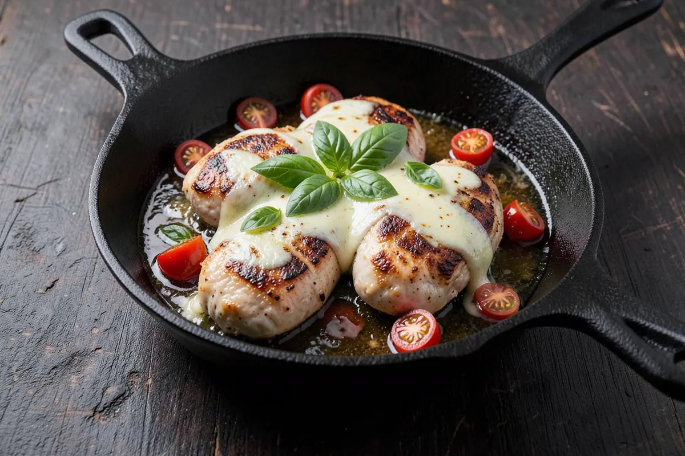

Skillet Caprese Chicken

Illustrative image.
Caprese chicken takes the parts of a summer salad that people actually want, the tomato, mozzarella and basil, and puts them on top of a seared chicken breast. The cheese melts over the chicken in the pan, the tomatoes blister and sweeten, and a drizzle of balsamic glaze ties it together.
It cooks in one skillet in about half an hour, which makes it a practical weeknight dinner that still looks like something you would serve to guests.
Ingredients
- 4 boneless, skinless chicken breasts
- 2 tbsp olive oil
- 1 tsp dried Italian seasoning
- 1 cup cherry tomatoes, halved
- 2 cloves garlic, minced
- 4 thick slices fresh mozzarella cheese
- 1/4 cup balsamic glaze
- Fresh basil leaves for serving
- Salt and pepper to taste
Instructions
- Season chicken breasts on both sides with Italian seasoning, salt, and pepper.
- Heat olive oil in a large skillet over medium-high heat. Add the chicken and cook for 5-6 minutes per side until beautifully browned and cooked through.
- Push the chicken to the sides of the skillet. Add the halved cherry tomatoes and minced garlic directly into the center of the pan, sautéing for 2-3 minutes until tomatoes soften slightly.
- Place a thick slice of fresh mozzarella cheese over each chicken breast. Cover the skillet with a lid for 2 minutes to let the cheese melt smoothly.
- Remove from heat, top with fresh basil, and drizzle balsamic glaze over everything right before serving.
Why this recipe works
Pounding the chicken to an even thickness is what stops one end from drying out while the other is still pink. Searing it first builds colour, and finishing it under a lid with the mozzarella on top melts the cheese without overcooking the meat. The tomatoes go in at the end so they keep their shape.
Tips for success
- Pat the chicken dry and season it well before it touches the pan. A dry surface browns far better than a damp one.
- Add the mozzarella in the last two minutes and cover the pan. The trapped heat melts it without a trip to the oven.
- Tear the basil rather than chopping it, and add it after the pan comes off the heat so it stays green.
Substitutions that work
- Chicken thighs work well and are more forgiving if you tend to overcook breasts. Add a few minutes of cooking time.
- Fresh mozzarella is traditional, but low-moisture mozzarella melts more neatly and will not release as much water.
- Balsamic glaze can be replaced with a reduction of balsamic vinegar and a teaspoon of honey.
Storage and make-ahead
Refrigerate leftovers for three days in a covered container. Reheat gently in a covered pan with a splash of water, or slice cold and add to a salad. The cheese will not melt as well on the second day, so add fresh basil to lift it.
Serving suggestions
Serve with crusty bread to soak up the tomato juices, or over a bed of arugula. Roasted potatoes or a simple pasta on the side round it into a full dinner.
Frequently asked questions
Can I use chicken thighs instead of breasts?
Yes. Boneless thighs take a little longer to cook but stay juicy, and they work well with the same tomato and mozzarella topping.
How do I stop the mozzarella from sliding off?
Let the chicken rest for a minute after searing, then lay the cheese over the top and cover the pan. The melted cheese grips the surface once it starts to soften.
Is balsamic glaze the same as balsamic vinegar?
No. Glaze is vinegar reduced with sugar until syrupy. If you only have vinegar, simmer half a cup with a teaspoon of honey until it coats a spoon.